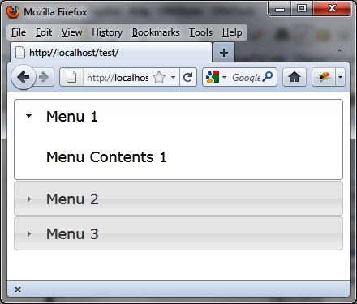
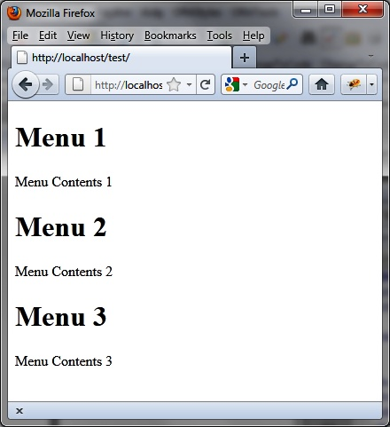

{% include JB/setup %}
{% raw %}
<div>
<div class="calibre13"></div><div class="book" title="Chapter 3. Accordion Menus"><div class="book"><div class="book"><div class="book"><div class="calibre13"></div><h1 class="title1"><a id="accordion_menus" class="calibre1"></a>Chapter 3. Accordion Menus</h1></div></div></div><p class="calibre7">Like tabs, accordion menus allow you to organize information on the
  HTML page. The information in blocks is displayed or hidden depending on the
  selected menu. The concept of accordion menus is that when a block is
  visible, the other blocks are hidden with an animation that looks like an
  accordion movement.</p><div class="book" title="Basic Principles of Accordion Menus"><div class="book"><div class="book"><div class="book"><h1 class="title2"><a id="basic_principles_of_accordion_menus" class="calibre1"></a>Basic Principles of Accordion Menus</h1></div></div></div><p class="calibre7">Suppose we want to write the HTML code to display the accordion
    menus shown in <a class="ulink" href="ch03.html#accordion_menus-id1" title="Figure 3-1. Accordion menus">Figure 3-1</a>. We have three menu
    bars, each with different content.</p><div class="book"><div class="figure"><a id="accordion_menus-id1" class="firstname"></a><div class="book"><div class="book"><a id="I_mediaobject3_d1e1772" class="firstname"></a></div></div><p class="title4">Figure 3-1. Accordion menus</p></div></div><p class="calibre7">jQuery UI requires us to write this as follows for each of the
    menus, one after the other (the title and content elements repeat one
    after the other):</p><div class="book"><ul class="itemizedlist"><li class="listitem"><p class="calibre7">A global <code class="literal">&lt;div&gt;</code> block
        enclosing the whole.</p></li><li class="listitem"><p class="calibre7">An element that will be the title of the menu: it can be a
        &lt;h1&gt;, &lt;h2&gt;, ..., &lt;h6&gt;, which will contain an
        &lt;a&gt; link that will indicate the menu text (and for which the
        href attribute is unnecessary, because it is not used).</p></li><li class="listitem"><p class="calibre7">A <code class="literal">&lt;div&gt;</code> element
        corresponding to a content menu.</p></li></ul></div><a id="I_programlisting3_d1e1795" class="firstname"></a><pre class="programlisting"><span class="firstname"><strong class="userinput">&lt;!DOCTYPE html&gt;</strong></span>
&lt;script src = jquery.js&gt;&lt;/script&gt;
&lt;script src = jqueryui/js/jquery-ui-1.8.16.custom.min.js&gt;&lt;/script&gt;

&lt;link rel=stylesheet type=text/css
      href=jqueryui/css/smoothness/jquery-ui-1.8.16.custom.css /&gt;

&lt;div id="accordion"&gt;
  &lt;h1&gt;&lt;a&gt;Menu 1&lt;/a&gt;&lt;/h1&gt;
  &lt;div&gt;Menu Contents 1&lt;/div&gt;
  &lt;h1&gt;&lt;a&gt;Menu 2&lt;/a&gt;&lt;/h1&gt;
  &lt;div&gt;Menu Contents 2&lt;/div&gt;
  &lt;h1&gt;&lt;a&gt;Menu 3&lt;/a&gt;&lt;/h1&gt;
  &lt;div&gt;Menu Contents 3&lt;/div&gt;
&lt;/div&gt;

&lt;script&gt;

&lt;/script&gt;</pre><p class="calibre7">When we display the page in a browser, once again, the result is not
    expected, but is a simple HTML page containing the titles and contents of
    the menus (<a class="ulink" href="ch03.html#html_preview_of_a_simple_accordion_menu" title="Figure 3-2. HTML preview of a simple accordion menu">Figure 3-2</a>).</p><p class="calibre7">As we saw in <a class="ulink" href="ch02.html" title="Chapter 2. Tabs">Chapter 2</a>, we must indicate in the HTML
    page that this display must be made according to the conventions of jQuery
    UI. To do this, simply indicate that the overall <code class="literal">&lt;div&gt;</code> is managed by the jQuery UI <code class="literal">accordion ()</code> method. Add the following line in
    the &lt;script&gt; tag:</p><a id="I_programlisting3_d1e1813" class="firstname"></a><pre class="programlisting">&lt;script&gt;

$("#accordion").accordion();

&lt;/script&gt;</pre><p class="calibre7">Notice the <code class="literal">&lt;! DOCTYPE html&gt;</code>
    header in the HTML. If this statement is not present, the management of
    menus is done poorly in Internet Explorer.</p><div class="book"><div class="figure"><a id="html_preview_of_a_simple_accordion_menu" class="firstname"></a><div class="book"><div class="book"><a id="I_mediaobject3_d1e1823" class="firstname"></a></div></div><p class="title4">Figure 3-2. HTML preview of a simple accordion menu</p></div></div></div></div></div>

{% endraw %}

